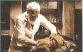
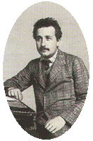
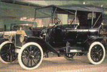

| |
|
1904
  Ivan
Petroviç Pavlov, Nobel Fizyoloji ve Týp Ödülü'nü
kazandý. Ivan
Petroviç Pavlov, Nobel Fizyoloji ve Týp Ödülü'nü
kazandý.
Hayvanlar
üzerinde yaptýðý deneylerle þartlý refleks kavramýný
geliþtiren Pavlov, bu ödülü, sindirim salgýlarý üzerindeki
araþtýrmalarý nedeniyle kazanmýþtý.
|
| 1905
IQ testi uygulandý.
Alman psikolog Wilhelm Stern'in ortaya koyduðu IQ
(Intelligence Quotient) kavramý Lewis Terman tarafýndan
Stanfort-Biret testinde kullanýlmak üzere uyarlandý.
Zeka yaþýnýn kronolojik yaþa bölümünün 100'le çarpýlmasýyla
sonuç elde edilir. Ortalama IQ sayýsý 100 olarak kabul
edilmiþtir. 1 30'un üzerindeki deðerler üstün zekalý,
70'in altýndakilerse geri zekalý olarak nitelendirilir. |
| 1906
Lee
de Forest, elektronlarý salan elektrot (katot) ile
toplayan elektrot (anot) arasýna ýzgara adý verilen
kafes biçimli bir üçüncü elektrot yerleþtirerek üç
elektrotlu ilk elektronik lambayý (triyot) gerçekleþtirdi.
Izgaraya uygulanan gerilimin deðiþtirilmesiyle katot ile
anot arasýndaki elektron akýmýnýn azalýp çoðalmasý
saðlanýyordu. Böylece de triyot lamba yükselteç
olarak kullanýlabiliyordu. Telsiz iletiþimi ve radyonun
geliþmesinde triyot lambanýn büyük katkýsý olmuþtur. |
| 1908
Jean
Perrin sývý içinde asýlý halde bulunan çok küçük
parçacýklarýn Brown hareketlerini inceleyerek maddenin
atomlardan oluþtuðunu kanýtladý. |
| 1908
Hans
Geiger ilk radyasyon dedektörünü, bugün kullandýðýmýz
adýyla Geiger sayacýný, yaptý. Manchester Üniversitesi'nde
Ernest Rutherford'un yardýmcýlýðýný yapan Geiger,
yaptýðý deneylerle Rutherford'un çekirdeðin atomun
merkezinde çok küçük bir yer kapladýðýný anlamasýna
yardýmcý olmuþtu. |
| 1909
ABD'li
bir kaþif olan Robert Edwin Peary kuzey kutbuna ulaþmayý
baþaran ilk insan oldu. |
|
| 1903
Hollandalý
fizyolog Willem Einthoven, kendi adýyla anýlan ilk
telli galvanometreyi tasarladý. Galvanometre, kalp kasýnýn
kasýlmasýyla ortaya çýkan deðiþiklikleri ölçüyor
ve kaðýt üzerine kaydediyordu. Einthoven bu yönteme
elektrokardiyografi adýný verdi. |
| 1904
Ernest
Rutherford, Radyoaktiflik adýný verdiði kitabýný
yayýmladý. Ýngiliz fizikçi kitabýnda, bu konudaki
çalýþmalarýnýn sonuçlarýný anlatýyor ve
radyoaktif etkinliðin dýþ koþullardan etkilenmediðini,
radyoaktif süreçlerde kimyasal tepkimelere oranla daha
fazla miktarda ýsý açýða çýktýðýný ortaya
koyuyordu. Ayrýca bu yapýtýnda radyoaktif dönüþüm
sonucunda kimyasal nitelikleri farklý yeni ürünlerin
ortaya çýktýðýný ileri sürüyordu. |
| 1905
 Albert
Einstein,
özel görelilik kuramýna iliþkin "Hareketli
Cisimlerin Elektrodinamiði" adlý makaleyi yayýmladý.
Bu makale fizikte devrim niteliði taþýr.
|
| 1907
Bertrand
Boltwood radyometrik tarihleme yöntemini buldu. 1905 yýlýnda
uranyumla baþlayan radyoaktif bozunumlarýn son ürününün
kurþun olduðunu gösteren bilim adamý, 1907'de içlerindeki
kurþun-uranyum oranýna bakarak bazý kayaçlarýn yaþýný
ölçme yöntemini geliþtirdi. Bu yöntem sayesinde Dünya'nýn
yaþýnýn tahmin edilmesinde önemli adýmlar atýldý.
Bu yöntem ayrýca arkeolojide de kullanýldý. |
| 1908
 Ford
firmasý "T" modeli denen otomobili piyasaya sürdü.
Bu model, bir at almaya parasý yeten herkesin alabileceði
ucuzluktaydý. Böylece otomobiller
yalnýzca zenginlerin oyuncaðý olmaktan çýkýp günlük
yaþamda kullanýlmaya baþladýlar. Kýsa bir süre
sonra ilk üretim bandýný da devreye sokarak seri üretime
geçen ilk firma yine Ford olacaktý.
|
|
|